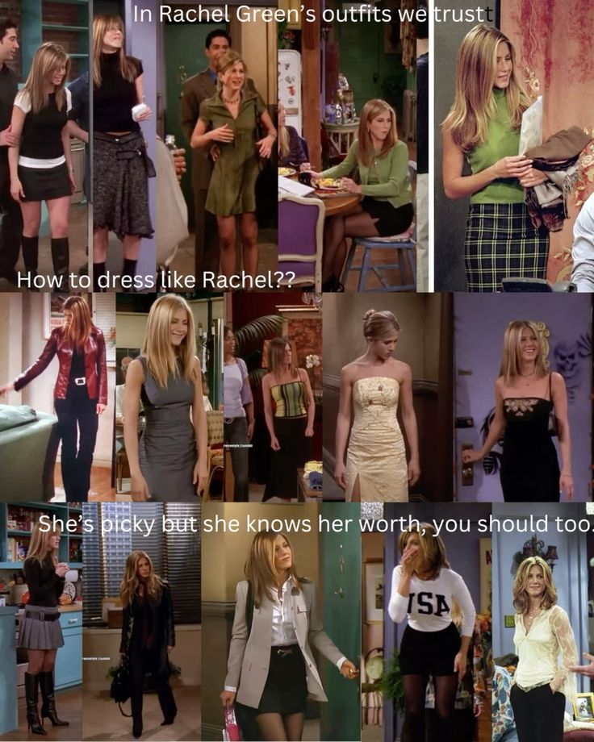

Spring is in the air, and it's time to channel your inner 2000s icon with effortless style! Start your retro revival with a classic denim skirt; opt for a medium wash or distressed design that hits just above the knee for that quintessential 2000s feel. Pair it with a vibrant halter top—think bold colors or playful prints—to bring some fun and flirtiness to your look. When it comes to footwear, cutesy kitten heels are the perfect way to elevate your outfit without sacrificing comfort. Choose a pair with quirky embellishments or a pop of color to really stand out. Don't forget to accessorize with chunky jewelry and a mini handbag to complete the ensemble. With these key pieces combined, you'll be ready to take on the season in true early-2000s style!

If you’re looking to embody the iconic style of Rachel Green from "Friends" this fall, you're in for a treat! Start with a cozy oversized knit sweater in warm autumn hues like burnt orange, mustard yellow, or deep burgundy, perfectly paired with a classic plaid mini skirt or high-waisted jeans for that quintessential '90s-'00s vibe. Layer with a chic trench coat or faux shearling jacket to keep it effortlessly stylish while the temperatures drop. Footwear should include chunky ankle boots or trendy loafers to complete the look, and don't shy away from knee-high socks for that playful touch. Accessorize with statement earrings and a slouchy beanie, and finish off with a handbag thats both functional and fashionable. With these pieces, you will capture the laid-back yet polished essence of Rachel Green while embracing the beauty of fall!